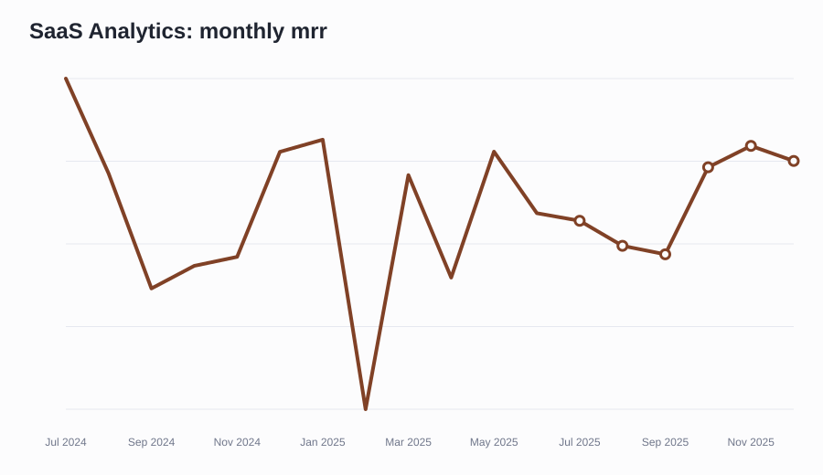
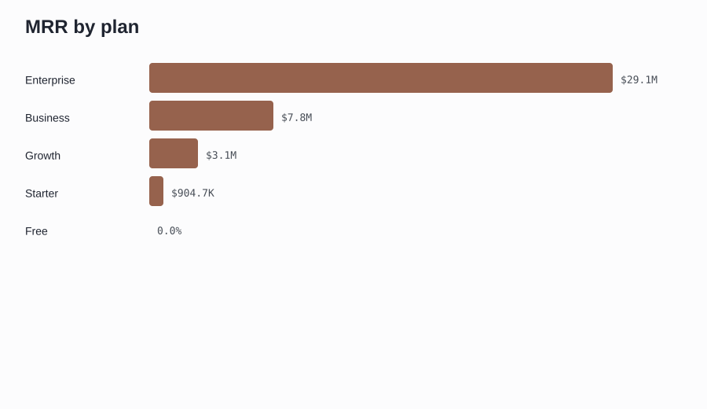
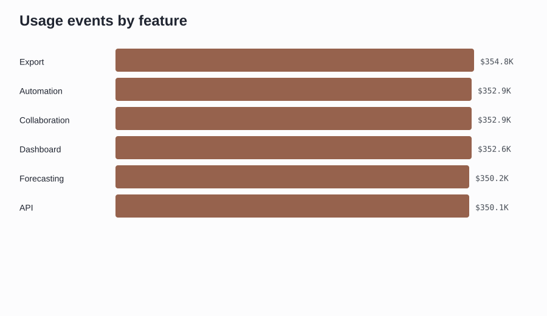
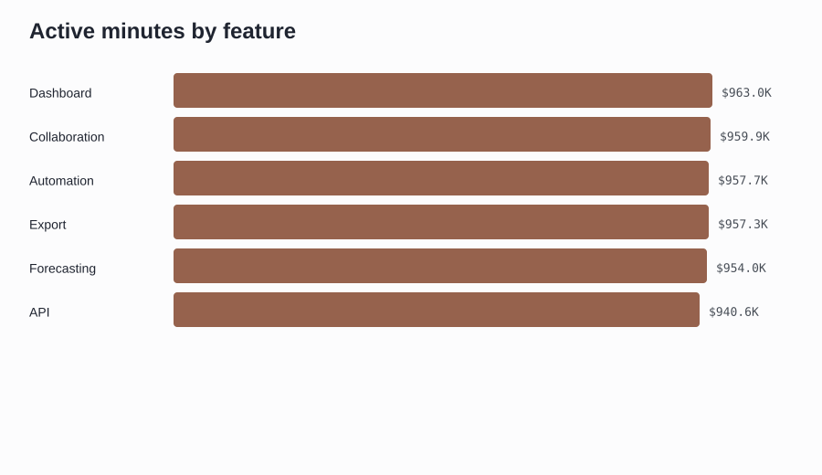
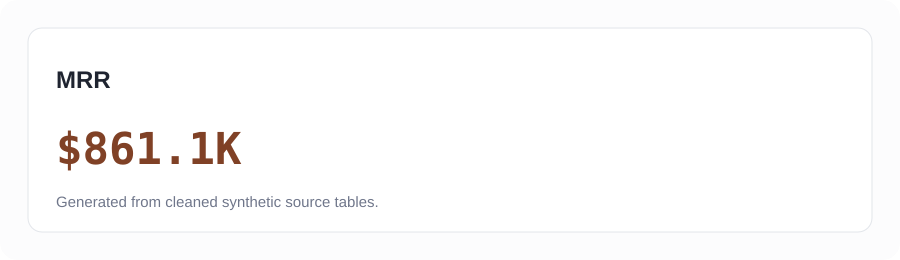
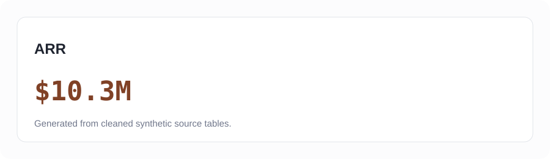

Executive Overview
Interactive Power BI build spec and local chart assets are mapped to this dashboard page.
Revenue Analytics
Interactive Power BI build spec and local chart assets are mapped to this dashboard page.
Subscription Analytics
Interactive Power BI build spec and local chart assets are mapped to this dashboard page.
Customer Analytics
Interactive Power BI build spec and local chart assets are mapped to this dashboard page.
Retention Analytics
Interactive Power BI build spec and local chart assets are mapped to this dashboard page.
Growth Analytics
Interactive Power BI build spec and local chart assets are mapped to this dashboard page.
Sources and methodology
Metrics reconcile to `data/cleaned` CSV files. SQL patterns, notebook analysis, and metric definitions are included in this repository.